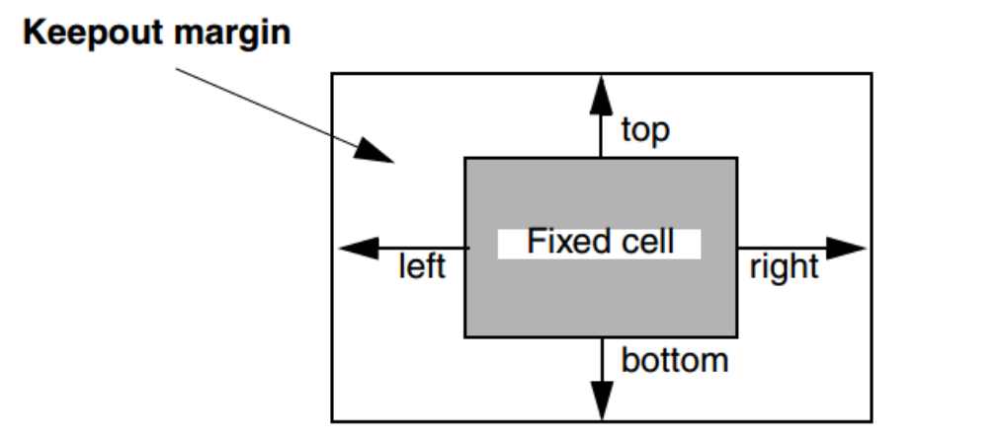
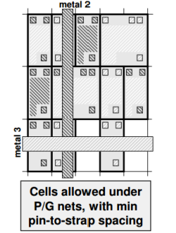
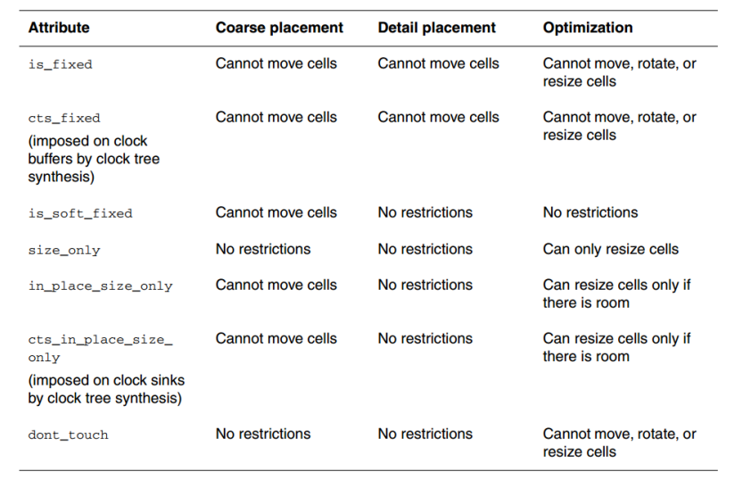
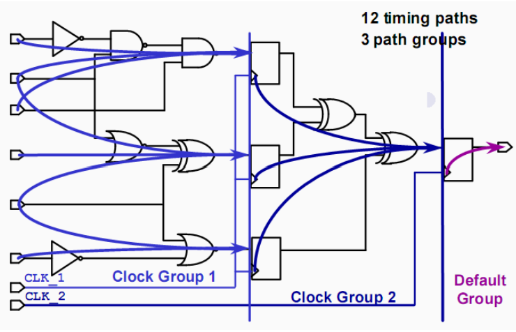
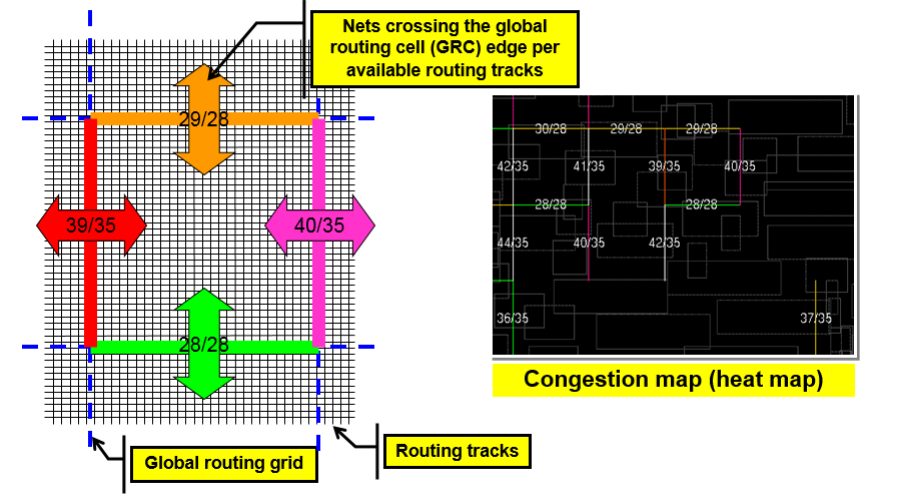
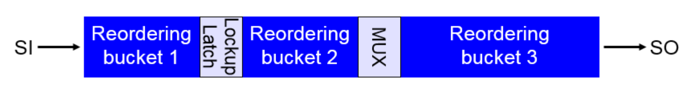
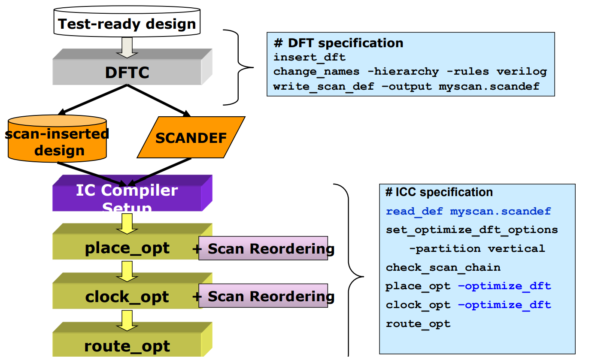

ICC-Placement
本文最后更新于：2023年11月8日 下午
1. Placement 准备
- Placement 目标
- 满足sdc约束。
- 满足物理约束（例如blockage/move bound）。
- 考虑使用尽量少的绕线资源，优化避免congestion。
- 面积和功耗尽量小。
- 文件准备
- 准备好milkway库。
1
open_mw_lib ../mw/... - 打开Floorplan design的mw_cel。
- 在Milkway library下做的设计，都以milkway
cel的形式存在。可以使用下面指令查看存在设计对应的mw_cel。
1
list_mw_cels
- 在Milkway library下做的设计，都以milkway
cel的形式存在。可以使用下面指令查看存在设计对应的mw_cel。
- 准备好milkway库。
- 将Floorplan做的StdCell、Blockage、Bounds 的Placement remove掉，在Placement阶段使用工具进行重新放置。
2. 时序约束（SDC）
- 相关时序约束需要按照MCMM添加，可以看这篇博客。
- 在DC/DCT阶段，一些High fanout net被设置为dont touch，在Placement阶段，dont touch属性需要remove掉。例如复位信号等，时钟信号仍先不动。
3. 物理约束
（1）fix 住Floorplan做的所有的macro cell，防止在Placement时Macro被移动。
（2） placement blockage
- 主要有以下三种
- Hard blockage：严格规定不可以在指定区域添加stdcell。
- Soft blockage：在Coarse Placement不会摆stdcell，但是在Detail Placement时，基于Coarse Placement进行微调，可能会进入Soft blockage。
- Partial blockage：可以指定cell类别添加/不添加，以及添加百分比。
- 可以使用下面指令为指定宽度的channel添加blockages。
1
derive_placement_blockages -apply -thin_channel_width 60
- 主要有以下三种
（3）create_bounds
- 选择指定的cell都放在一个固定的区域。
（4）keepout margin
- 为macro设置一个keepout范围不放置stdcell。也可以指定hard/soft。和在macro附近设置blockage是做一件事。
- 在Floorplan阶段就需要去做，因为Floorplan阶段需要设置keepout，来确定endcap摆放在keepout外。

（5）set_pnet_options
- 主要是考虑到电源线下需要打通孔到底层金属，如果在pnet下放置stdcell，那么可能会出现congestion的问题。所以可以使用指令设置在pnet下stdcell的摆放。
- 可选选项：在特定金属层下
-partial、-complete、-none：部分摆，完全不摆，随意摆。
其中部分摆：可以留出pin用于连接的space，就可以摆。

（6）set_ignored_layers
- 设置route使用的layer范围。
（7）Non_Default Clock Routing
- 考虑到时钟的特殊性，其需要NDR来约束，常见的：double-spacing，double-width以及shielding。这些会影响congestion的评估，所以应该在placement阶段就设置好。
（8）Define libcell spacing
- 使用下面指令指定限制多个cell之间的spacing。
1
set_spcacing_label_rule
- 使用下面指令指定限制多个cell之间的spacing。
（9）一些Placement/Optimization Attributes的设置如下表所示，对应place_opt的三个步骤。

4. Timing Driven placement & optimization
- 默认Placement是基于timing drivern的。
- 优化方法
- Placement会将关键路径上的模块放的靠近一些，连线就减短了，自然RC就小了。
- 使用Size cell来获得更小的延时，但是代价是面积和功耗。
- Simple logic mapping：对逻辑进行优化，remap。
- Layer
optimization：对于关键路径，采用高层金属布线，因为高层金属的厚度更大，电阻更小。
- 优化思想
- 无论是DC/ICC，timing的优化都是基于path group进行优化的。默认的group是按照不同clk进行分组。
- 可以设置path group优先级。
- DC会优先优化每个path group中最差的timing path（critical path）。
- 可以通过指令 set_critical_range 设置优化critical
path的范围；DC和ICC都可以使用这个指令。具体内容可以看这篇内容。
也可以使用group_path进行分组时，添加-critical range选项设置range value。

- 可以通过指令 set_critical_range 设置优化critical
path的范围；DC和ICC都可以使用这个指令。具体内容可以看这篇内容。
- 可以使用ICC的timing path highlight工具进行分析，更直观的在版图上看到timing path的走向，再进一步添加约束。
- 对于小的timing violation，可以使用psynopt进行增量优化。
5. Congestion Driven placement & optimization
Congestion 导致的问题
- 由于出现congestion，那么detail route和virtual route可能相差很大，导致virtual route估计的RC不准。Placement可能时序满足了，但是Route之后并不满足。
- detail route绕不通，可能会出现很多short。
工具计算Congestion的方法
- 计算穿过的routing和available的routing数量，如果前者大于后者，那么出现congestion。

congestion driven 优化
- 解决congestion driven可以将那些非critical path的cell往稍远些摆放，但可能会导致RC变大，时序变差。
- 初步place_opt先不加-congestion选项，检查是否出现严重的congestion，如果没出现，不需要加该选项，因为可能导致时序和面积都变差。
- 为了获得placement之后和post_route更好的correlation。可以使用下面指令。
1
set placer_enable_enhanced_router TRUE
解决congestion的策略
- rerun placement with congestion option.
- scan_reorder 可以缓解congestion。可以看下面第7节内容。
- refine_placement
- 适合在place_opt之后，添加指令refine_placement对阻塞进行优化.
- 一些选项可选，如 -congestion_effort 和 -perturbation_level（对其他部分设计的影响程度，可选min/medium/high/max）。
- 更改物理约束
- 调整cell density/pin density
- 可以在place之前，将pin脚很多的cell使用dont_use指令屏蔽掉。
- 在一些特殊区域（如：macro的拐角，macro之间的channel等）使用partial
blockage进行设置
- 使用placement blockage -partial
选项，设置摆放的stdcell百分比是多少。或者使用下面指令，一样的效果。
1
set_congestion_options -max_util 0.4 -coordinate {x1 y1 x2 y2}
- 使用placement blockage -partial
选项，设置摆放的stdcell百分比是多少。或者使用下面指令，一样的效果。
- 检查congestion是否和pg strap有关，检查是否设置了pnet options，或者strap太宽。
- 添加/更改 blockages
- 调整cell density/pin density
- 更改Floorplan
- macro形状/大小不合理，导致输入/输出pin都挤到一起，引起阻塞。
- 移动macro位置。
- 移动pin/pad的位置。
6. Area & Power optimization
- 面积优化
- 设置指令指定slack大于某一界限值时，可以进行面积优化操作，如size
down。
1
physopt_area_critical_range = "0.1"
- 设置指令指定slack大于某一界限值时，可以进行面积优化操作，如size
down。
- 功耗优化
- Leakage Power Optimization
替换不同VT的cell，在功耗和时序之间balance。
也是可以使用下面的指令设置slack大于某一界限值时，进行功耗优化。
set physopt_power_critical_range
- Dynamic Power Optimization
- Low Power Placement：减小高翻转率信号的线长，目的减小C。翻转率可以通过读入SAIF文件得到。更多关于功耗优化的可以看这篇文章。
- 使用place_opt 添加-power选项。
- Leakage Power Optimization
7. Scan chain reorder
- 将寄存器首尾相连，做测试链。
- 出现的问题
- 由于DFT在DC阶段插入scan chain是随意的，那么其导出的ddc和Scan_def.def给到ICC时，进行route，可能会导致连线乱飞，占大量的绕线资源，出现congestion的问题。
- 解决方法：使用Placement工具提供的scan chain
reorder工具，重新连接scan chain中reg的顺序。
但是reorder存在一个作用范围，如下图所示，被分为了三部分，每个bucket内可以随意reorder。

在后端设计流程中，可以做scan reorder如下。

8. Place阶段一些常用opt指令
- place_opt
- 选项
- -spg：DCT中会做一个粗略的Placement工作，并可以通过ddc传给ICC。
- place_opt 包括下面几步优化
- Coarse Placement
- 考虑Power，Area，Congestion，将stdcell放一个大概的位置；不做逻辑优化。
- Cells overlap and not on-site.已经确定好大致位置，后面只需微调。
- 此步也需要指定好Routing相关的设置，如Routing Blockages，因为此步的Placement需要考虑Congestion进行优化。
- Detail Placement
- Legalized stdcell，将Stdcell放置在合适的位置。具体内容可以看这篇文章。
- Placement optimization
- 和上一步不断迭代优化。
- 主要优化方向：Timing/Area/Power/Congestion.
- 会做逻辑优化，例如size cell 或者合并部分cell等。
- 在这步还会做AHFS（Auto High Fanout Synthesis），主要解high fanout net的DRC。
- Coarse Placement
- 选项
- pysnopt
- 本文章前面也提到，在某些较小violation需要修时，可以使用增量优化，节省时间。
- refine_placement
- 在本文章前面介绍解决congestion的策略中也有介绍该指令。主要用于在place_opt之后做的处理阻塞的增量优化。
9.Tie-Cell & Spare-Cell insertion
- Tie-Cell
- 为什么需要Tie-Cell
- 在一些Design中，有些input pin被直接连到0/1上，但是如果直接将input pin连接到0/1上，ESD可能会损坏这个pin的gate/poly。
- 即使有ESD保护，但是为了更稳妥，还是需要将input pin连接到Tie
cell，而不是PG Strap。
- Tie-Cell的种类
- Tie-HI Cell 和 Tie-LO Cell
- 可以使用指令让工具自动插入Tie Cell，也可以使用独立的插入命令。
- 为什么需要Tie-Cell
- Spare-Cell
- 是一种冗余逻辑单元，主要用于以下情况。
- 在制造PostMask之后，想要修改电路，添加逻辑，可以使用在Placement洒下的sparecell。这样不用动base layer的mask，只需要修改那一层metal layer的连接关系，实现逻辑修改；可以节省baselayer mask的成本（mask是较贵的程序）。
- 如何添加
- 设置一个spare_list，将常见逻辑的cell都添加一定数量进去。
- 根据设计的规模，添加多组spare_list。
- 是一种冗余逻辑单元，主要用于以下情况。
ICC-Placement
http://binbinqian.cn/2023/11/08/ICC-Placement/